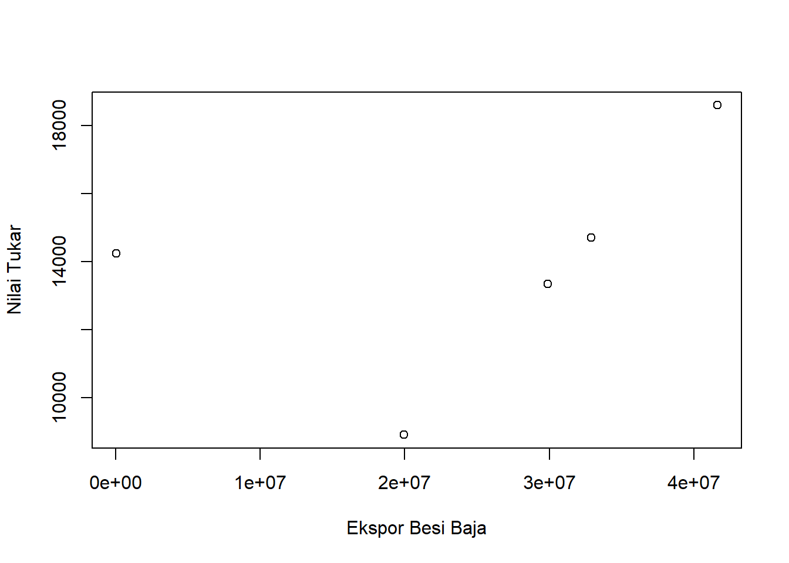

library(readxl)
library(WDI) Warning: package 'WDI' was built under R version 4.2.2Analisis pengaruh Ekspor Besi/Baja ke Negara Singapura terhadap nilai tukar rupiah pada tahun 2012-2021
Ekspor merupakan sebuah motor penggerak perekonomian nasional yang menjadi salah satu komponen dalam menyumbang pendapatan dan devisa negara. Selain itu, ekspor juga dapat menstimulasi pertumbuhan ekonomi melalui peningkatan Gross Domestic Product (GDP) serta mampu menurunkan jumlah kemiskinan. Dengan adanya ekspor, lapangan kerja dan penggunaan tenaga kerja sebagai faktor produksi semakin meningkat, sehingga mengurangi jumlah pengangguran dan meningkatkan kesejahteraan masyarakat suatu negara.
Dalam kawasan ASEAN, ekspor tertinggi adalah pada kelompok hasil industri besi, baja mesin-mesin dan otomotif. Meskipun mengalami fluktuasi, nilai ekspor kelompok hasil industri besi baja, mesin-mesin dan otomotif lebih besar dibanding dengan pengolahan kelapa sawit. Besarnya nilai kelompok industri besi baja, mesin-mesin dan otomotif terhadap ekspor tidak terlepas dari peranannya dalam menunjang perekonomian dan mendukung pertumbuhan infrastruktur. Hasil industri tersebut dapat digunakan sebagai bahan pembuatan dan pengembangan teknologi baru yang lebih maju.
Kelompok hasil industri besi baja, mesin-mesin dan otomotif sebagian besar di ekspor ke negara-negara ASEAN. Selain itu, Jepang juga menjadi salah satu importir terbesar untuk hasil industri tersebut. Empat negara ASEAN sebagai importir terbesar adalah Singapura, Malaysia, Thailand, dan Filipina. Selain importir terbesar dalam hasil industri besi baja, mesin-mesin dan otomotif, empat negara tersebut juga termasuk ke dalam 30 negara tujuan ekspor terbesar untuk produk hasil industri. Bahkan, total ekspor hasil industri besi baja, mesin-mesin dan otomotif ke empat negara ASEAN dan Jepang rata-rata mencapai 50 persen dari total ekspor meskipun mengalami penurunan pada tahun 2014 dan 2015 yang hanya mencapai 47,67 persen dan 44,98 persen.
Dalam penelitian ini penulis mengambil objek penelitian dari Badan Pusat Statistik. Ruang lingkup penelitian ini terdapat 2 variabel antara lain Ekspor Besi Baja dan Nilai tukar. Data yang digunakan adalah data yang bersifat time series yaitu dalam kurun waktu 2012 - 2021 dengan satuan yang telah diubah kedalam Rupiah, data inilah yang kemudian menjadi objek penelitian.
Berdasarkan uraian latar belakang diatas maka yang menjadi masalah pokok pada penelitian adalah:
Berdasarkan pada latar belakang dan permasalahan yang ada, maka tujuan dari penelitian ini adalah untuk mengetahui pengaruh ekspor besi baja terhadap nilai tukar.
Packages yang digunakan sebagai bahan regresi multivariat dalam penelitian ini antara lain seperti dibawah ini
library(readxl)
library(WDI) Warning: package 'WDI' was built under R version 4.2.2Ekspor adalah kegiatan mengeluarkan barang dari daerah pabean. Menurut Salvatore (1997), terdapat beberapa alasan sehingga dilakukannya ekspor oleh suatu negara, antara lain:
1. keinginan suatu negara untuk memperluas pemasaran komoditas domestik untuk meningkatkan sumber devisa bagi kegiatan pembangunan
2. keinginan untuk memenuhi berbagai kebutuhan yang tidak dapat dipenuhi dari produksi atau hasil dalam negeri,termasuk kebutuhan yang dapat diproduksi namun diperlukan biaya yang lebih tinggi dibandingkan jika diproduksi di luar negeri.
Berikut adalah data yang digunakan sebagai objek penelitian, data dibawah ini merupakan data nilai ekspor besi/baja.
| Tahun | Indonesia (X) | Singapura (Y) |
|---|---|---|
| 2012 | 4666485700000 | 4062383220,0 |
| 2013 | 3678235150000 | 3202067190,0 |
| 2014 | 3409540300000 | 2968156380,0 |
| 2015 | 2861524250000 | 2491084050,0 |
| 2016 | 2415217550000 | 2102554230,0 |
| 2017 | 1788262900000 | 1556762340,0 |
| 2018 | 2926800400000 | 2547909840,0 |
| 2019 | 1894526400000 | 1649269440,0 |
| 2020 | 1733613100000 | 114200000 |
| 2021 | 2172329550000 | 1891109430,0 |
penelitian ini menggunakan data data sekunder dengan bentuk time series 2012-2021, data yang dipakai ialah data yang telah diolah dengan sumber Badan Pusat Statistik.
setwd('D:/METOD/UAS METOPEL')
dat<-read_excel('latihan.xlsx')
library(readxl)
plot(dat$X,dat$Y,xlab="Ekspor Besi Baja",ylab="Nilai Tukar")
Teknik analisis yang digunakan dalam penilitian ini adalah teknik Kuantitatif deskriptif. Teknik analisis kuantitatif merupakan analisis yang dilakukan dengan perhitungan angka-angka yang faktor yang mempengaruhi indeks nilai tukar rupiah terhadap nilai ekspor besi baja ke singapura.
\[ y_{t}=\beta_0 + \beta_1 x_t+\mu_t \] di mana \(y_t\) adalah hwy dan \(x_t\) adalah cty.
Ekspor besi baja berpengaruh terhadap nilai tukar. Di tunjukan dari probabilitas x ( nilai ekspor ) yang signifikan. Nilai ekspor sering menjadi faktor yang dapat mendorong naik dan turunnya kurs mata uang suatu negara.
Hasil regresinya adalah
library(readxl)
dat<-read_excel('latihan.xlsx')
reg1<-lm(Y~X,data=dat)
summary(reg1)
Call:
lm(formula = Y ~ X, data = dat)
Residuals:
1 2 3 4 5
-1096.79 -40.05 2702.20 -4570.53 3005.17
Coefficients:
Estimate Std. Error t value Pr(>|t|)
(Intercept) 1.153e+04 3.224e+03 3.576 0.0374 *
X 9.751e-05 1.125e-04 0.867 0.4499
---
Signif. codes: 0 '***' 0.001 '**' 0.01 '*' 0.05 '.' 0.1 ' ' 1
Residual standard error: 3579 on 3 degrees of freedom
Multiple R-squared: 0.2002, Adjusted R-squared: -0.06634
F-statistic: 0.7512 on 1 and 3 DF, p-value: 0.4499Berdasarkan Data yang telah di Analisis, setelah diamati ekspor besi baja ke negara singapura berpengaruh terhadap nilai tukar rupiah dan besi baja juga termasuk komoditas yang memiliki volume ekspor terbesar di indonesia.
Andriani, T.(2017). Analisis Ekspor Indonesia Kategori Industri Besi Baja, Mesin-Mesin, Dan Otomotif Ke Singapura, Malaysia, Thailand, Filipina, Dan Jepang (Doctoral dissertation,Universitas Brawijaya).
https://scholar.google.com/scholar?hl=en&as_sdt=0%2C5&q=ekspor+besi+baja&oq=ekspor+#d=gs_qabs&t=1674219637109&u=%23p%3DgcITMIB0AbIJ